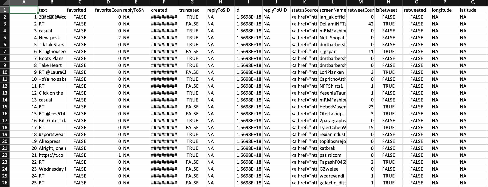
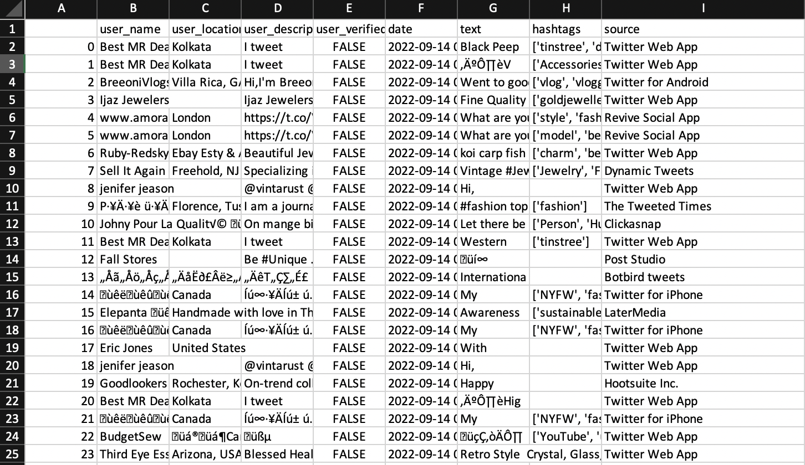
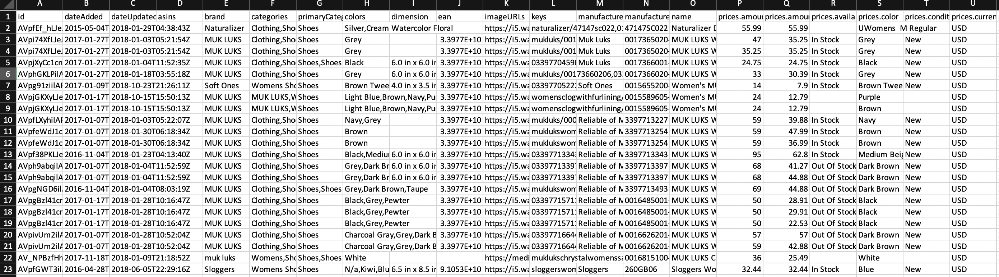

| Snippet of Dataset |
Description |
| 
View
Download csv file
|
R API
The Twitter API is used to extract tweets on the hashtag socialwork. The motive behind this is to understand the opinion of people regarding social work.
*The photo attached is the partial snippet of the dataframe. Click on View button to look at all the columns.
R code
|
| 
View
Download csv file
|
Python API
The main source of this data is The World Bank. With the help of their API, the data of different areas is gathered related to poverty. This data will be used to connect poverty to social work in that particular area.
Python code
|
| 
View
|
Raw Data
Women's Shoes: Download csv file
Men's Shoes: Download csv file
|